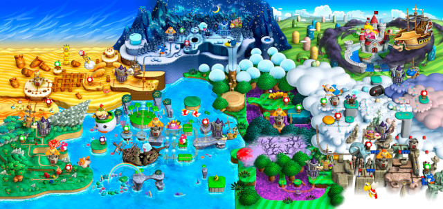

Objectif
La princesse Peach se promène tranquillement dans les jardins du Royaume Champignon, lorsque soudain un énorme nuage noir se forme dans le ciel et de puissants éclairs frappent le château de Peach. Aperçevant cela, Mario s'y précipite. Mais pendant ce temps, Bowser Jr. profite de son absence et kidnappe la princesse. Mario tente alors de le rattraper, en vain.
Il va falloir maintenant poursuivre Bowser Jr. pour libérer la princesse Peach de ses terribles griffes. Arriverez-vous à traverser les 8 mondes remplis de monstres afin de sauver la princesse ?